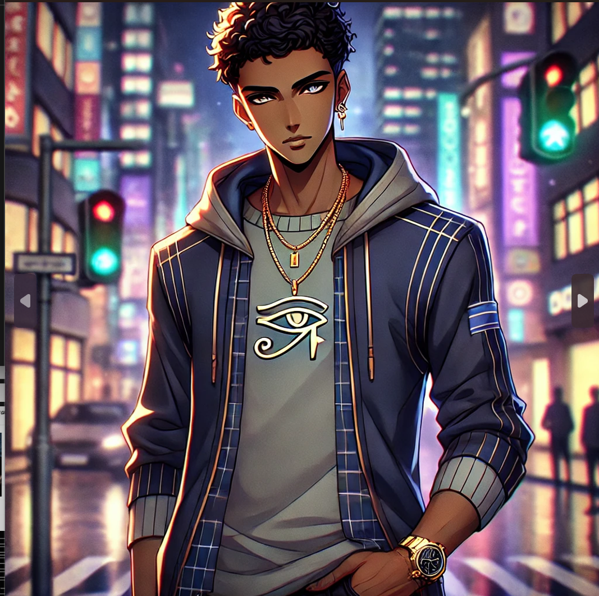
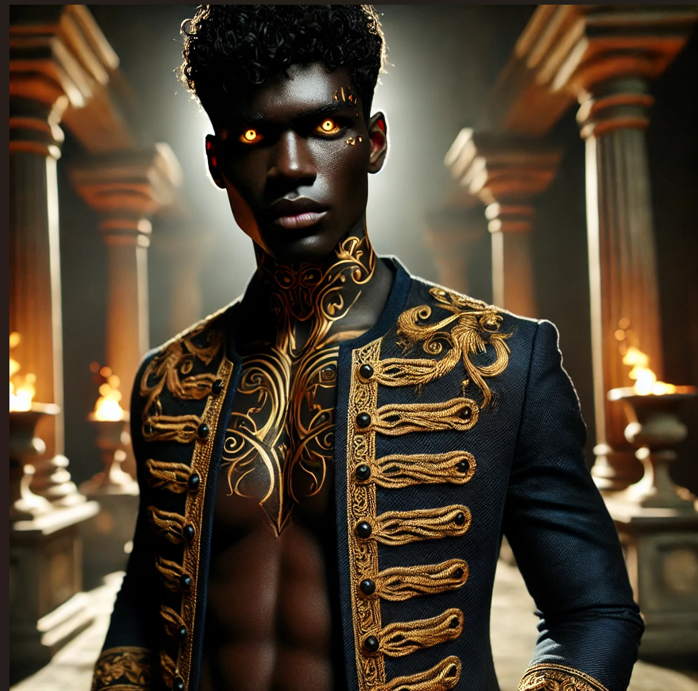

Step into the world of Geni, the human who defied fate and ascended to godhood. Blessed or cursed, only time can tell. Armed with the powers of Anubis and Poseidon, he can command the tides of destiny and walks the line between life and death.
Feel the power. Read the legend unfold.
Let the music set the stage and dive into the myth!
1.Geni Adebayo: De Laatste Golf
De lucht boven Jackson, Mississippi, was vroeger helder en warm, gevuld met de geur van vers gemaaid gras en het geluid van basketballen die over het asfalt stuiterden. Maar die wereld bestond niet meer.
Geni Adebayo was pas vijftien toen alles instortte. Hij groeide op als zoon van Nigeriaanse immigranten, Kofi en Amara Adebayo, mensen die hem leerden dat veerkracht sterker is dan wanhoop. Zijn vader, een leraar, gaf hem liefde voor kennis en geschiedenis mee. Zijn moeder, een arts, toonde hem dat zelfs in de donkerste tijden zorg en compassie het verschil kunnen maken. Samen met zijn kleine zusje Zuri werd hij grootgebracht met verhalen over hun voorouders, Yoruba-goden en de legendes van hun volk.
Het leven in Mississippi was niet altijd makkelijk. Overstromingen, stormen en aardbevingen werden steeds heftiger. Zijn familie moest meer dan eens verhuizen om te overleven, maar ze bleven samen, hielden stand. Totdat het onzichtbare gevaar kwam.
Een virus. Een ziekte die door de ineenstorting van de wereld ontstond en zich als een onzichtbare vloed door de mensheid verspreidde. Mensen verdwenen, stierven, werden vergeten. Zijn moeder werd ziek terwijl ze anderen probeerde te redden. Zijn vader volgde niet veel later. En Zuri… Zuri werd koortsig en gleed in een slaap waaruit ze nooit meer ontwaakte.
Geni bleef achter. Alleen. Gebroken. Woedend.
Vastbesloten om te Overleven
Waar anderen zich overgaven aan wanhoop, koos Geni voor strijd. De wereld was niet meer zoals hij ooit was geweest, en hij had geen andere keuze dan zich aan te passen. Hij werd nomadisch, zonder thuisbasis, zwervend door verlaten steden en dode landschappen. Hij leerde vechten, snel denken, en nog sneller bewegen.
Zijn jeugdige dromen—schrijver worden, striptekenaar misschien, professioneel basketbal spelen—voelden nu als herinneringen uit een ander leven. Maar sommige dingen veranderden niet. Hij bleef schrijven, niet om een publiek te bereiken, maar om zijn verhaal vast te leggen. Hij tekende de wereld zoals hij die zag: rauw, kapot, maar nog altijd vol verborgen verhalen.
En muziek… muziek bleef een toevlucht. De ritmes van rap en afrobeats hielden hem in beweging. Soms, in de stilte van de nacht, neuriede hij de liedjes die zijn moeder vroeger zong.
Maar boven alles hield hij vast aan zijn belofte: hij zou niet breken.
Wat Overbleef
Vastberaden. Strijdlustig. Altijd vooruitkijkend.
Dat was wie hij moest zijn om te overleven. Hij hielp waar hij kon, beschermde wie zwakker was, maar hij vertrouwde niemand zomaar. Sarcasme werd zijn schild, droge humor zijn manier om niet aan de pijn toe te geven.
Toch bleef het verlies aan hem knagen. In zijn dromen zag hij Zuri’s gezicht, hoorde hij zijn vaders stem die hem leerde over de geschiedenis, voelde hij de zachte aanraking van zijn moeders hand. Maar elke ochtend als hij wakker werd, was hij alleen.
Alleen in een wereld die niet langer de zijne was.
Maar zolang er nog iets over was om voor te vechten, zou hij dat doen.
Want hij was Geni Adebayo.
De laatste vonk in een stervende wereld.
2.Geni's Relaties
Vriendschap
Vóór de wereld in brand vloog, vóór de stormen en het virus, was er muziek. Was er vriendschap. Was er een toekomst.
In Jackson, Mississippi, waren Geni, Malik en Ava een onafscheidelijk trio. Ze groeiden samen op, vonden troost in elkaar en droomden van iets groters.
Malik was de extraverte van de groep, altijd vol energie, altijd met een nieuwe droom. Hij wilde rapper worden, en als hij zijn teksten spuugde, voelde het alsof de wereld even stilhield om te luisteren. Samen met Geni nam hij nummers op in zijn garage, hun stemmen echoënd door de kleine ruimte, gevuld met grootse ambities. "We gaan hier weg, bro," zei Malik altijd. "Onthoud dat."
Ava was anders. Rustiger. Een dromer met een schetsboek in haar handen en gedachten die altijd ergens verder reikten. Ze las boeken, tekende werelden die mooier waren dan de hunne, en begreep Geni op een manier die niemand anders deed. Wanneer zijn woede over het onrecht van de wereld hem dreigde op te slokken, was Ava degene die hem terughaalde. "Misschien kun je de wereld niet veranderen, Geni," zei ze eens, "maar je kunt wel iemands wereld veranderen."
Ze brachten hun dagen door op verlaten basketbalvelden, met muziek en gesprekken over de toekomst. Ze geloofden dat er iets beters wachtte, ergens voorbij Jackson, voorbij de stormen, voorbij de grenzen van hun beperkte wereld.
Maar het lot had andere plannen.
Toen de eerste steden vielen, probeerde Malik’s familie te vluchten. Waar naartoe? Geni weet het niet. Hij weet alleen dat hij nooit afscheid kon nemen.
Ava werd ziek. Het virus, dat als een onzichtbare vijand over de wereld joeg, vond haar ook. De laatste keer dat hij haar zag, was haar stem zwak, haar lichaam te moe om rechtop te blijven zitten. Hij beloofde terug te komen. Maar hij was te laat.
Nu is er alleen de herinnering. De echo van een beat uit Malik’s garage, het krassen van Ava’s potlood op papier. De geluiden van een leven dat niet meer bestaat.
Maar Geni houdt vast aan één ding: hoop.
Misschien leeft Malik nog. Misschien wacht Ava ergens, haar schetsboek in haar schoot, wachtend op het moment dat ze hem weer kan vertellen dat hij iemands wereld kan veranderen.
En zolang er hoop is, blijft hij zoeken.
De Last van Twee Goden
Twee stemmen in zijn hoofd. Twee schaduwen op zijn pad. Beide stervende, beide wanhopig genoeg om hun laatste krachten in hem te gieten. Maar Geni is geen gewillige pion—hij heeft vragen, twijfels, woede.
Poseidon kwam als een storm. Zijn stem dreunde als rollend onweer, zijn aanwezigheid vulde de lucht met de geur van zout en bliksem. Hij was trots, heerszuchtig, ongeduldig. Een god die zijn koninkrijk had verloren en nu een nieuwe pion zocht om de wereld terug te eisen. "De sterken heersen, de zwakken verdrinken," zei hij. "Kies wie je bent, jongen." Zijn macht was verleidelijk, een ongetemde kracht die Geni's woede voedde. Soms voelde hij het vuur in zich branden, een drift die hem wilde laten schreeuwen, slaan, alles en iedereen laten lijden zoals hij geleden had.
Maar dan was er Anubis. Stil. Berekenend. Waar Poseidon stormde, bekeek Anubis de chaos met ogen die alles zagen. Hij sprak zelden, maar wanneer hij dat deed, sneed zijn stem door de duisternis als een mes. "Je kunt vernietigen," fluisterde hij. "Of je kunt beschermen. Beide hebben een prijs." Hij woog Geni’s hart zonder oordeel, zonder druk, alleen met een simpele waarheid: hij had een keuze.
Geni voelde zich verscheurd tussen hen. Poseidon’s kracht beloofde gerechtigheid—of wraak. Anubis bood wijsheid—of een last die zwaarder woog dan hij kon dragen. Soms wilde hij toegeven aan de storm, de wereld laten beven zoals het zijn familie had afgenomen. Maar dan herinnerde Anubis hem eraan dat woede alleen een andere vorm van vernietiging was.
Twee stemmen. Twee wegen.
De vraag is niet wie van hen hij uiteindelijk zal volgen.
De vraag is: wie zal hij uiteindelijk worden?
3.De Transformatie: Van Geni naar Genisis
De regen sloeg genadeloos neer op de gebroken aarde. Donkere wolken hingen zwaar in de lucht, als een deken die de zon had opgeslokt. Geni Adebayo trok zijn kap over zijn hoofd en staarde naar de overblijfselen van wat ooit zijn thuis was. Mississippi was al geen makkelijke plek om op te groeien, maar de apocalyps had alles uitgewist. Wat ooit een wijk vol leven was, was nu een spookstad. Gebarsten asfalt, ingestorte huizen en een stilte die zwaarder woog dan de storm boven hem.
Zijn familie was weg. Zijn moeder, zijn vader, zijn kleine zusje Zuri. Een virus had hen weggevaagd, net als zoveel anderen. Geni was overgebleven. Alleen. Gebroken. En vol woede.
Hij wist niet precies wanneer de stemmen begonnen. Misschien was het op de avond dat hij de laatste adem van zijn zusje hoorde. Misschien was het toen hij met bebloede knokkels tegen een muur sloeg, schreeuwend naar een god die hij niet kende. Maar ze waren er. Eerst gefluister, dan echo's die door zijn botten dreunden.
Een diepe, dreigende stem: "De wereld verdient geen redding. Laat haar verdrinken."
Een koude, oude fluistering: "Wegen moeten gewogen worden. Jij bent nu de balans."
Hij begreep het niet. Niet toen. Maar de storm om hem heen leek te reageren op zijn hartslag. De regen bewoog met zijn ademhaling. De schaduwen leken te leven, als klauwen die zich om zijn vingers kronkelden. En toen kwam de pijn.
Het voelde alsof hij werd verscheurd en opnieuw werd opgebouwd. Zijn bloed kookte, zijn spieren trokken samen alsof ze zich opnieuw vormden. Een allesverslindende storm die door zijn lichaam raasde. Een oerkracht stroomde door hem heen, een mengeling van water en duisternis. Hij schreeuwde, maar de donder slikte zijn stem in.
Toen de pijn wegtrok en hij zijn ogen openden, leek de wereld veranderd. Zijn ogen straalde een diepe gouden gloed uit. Zijn huid tintelde van elektrische energie, en schaduwen bewogen onrustig om hem heen, alsof ze zich aan hem vastklampten. Waterdruppels hingen stil in de lucht, trilden mee met zijn ademhaling.
Poseidon en Anubis hadden hem gekozen.


Waarom hij?
Geni was geen koning. Geen krijger. Geen heilige. Hij was gewoon een jongen uit Jackson, Mississippi. Maar hij had iets wat velen niet hadden: doorzettingsvermogen. Hij had geleerd te overleven, zelfs toen de wereld alles van hem afnam. Zelfs toen hij niets meer had om voor te vechten.
Misschien was dat waarom hij was gekozen.
Of misschien was het gewoon toeval. Een wanhopige daad van stervende goden die hun krachten overgaven aan de eerste sterveling die sterk genoeg was om niet te breken. Maar hij wist één ding zeker—wat hun reden ook was, het maakte niet uit. Dit was nu zijn last om te dragen.
De Stemmen
Nadat de pijn verdween, bleef er iets anders achter: ruis in zijn hoofd. Geen gewone gedachten, maar stemmen, echo’s die door zijn geest dreunden als golven die tegen de kust beuken.
Een lage, dreigende stem, als rollend onweer: "De wereld verdient geen redding. Laat haar verdrinken."
Een fluistering, oud en kil als doodse stilte: "Wegen moeten gewogen worden. Je bent nu de balans."
Geni verstijfde. Hij wist niet waar de stemmen vandaan kwamen, maar ze vulden hem met een kracht die hem zowel bang als onoverwinnelijk maakte. Hij haalde diep adem en probeerde zich te concentreren, maar zijn lichaam reageerde instinctief. Water druppelde uit de lucht en verzamelde zich in zijn hand, een onstuimige massa die naar vrijheid leek te verlangen. De grond onder zijn voeten trilde, onrustig. Dit was geen kracht die hij zomaar kon beheersen.
Het overweldigde hem.
Met een schok liet hij het water los. De druppels vielen op de gebarsten aarde en verdwenen tussen het puin van wat ooit zijn huis was geweest. Zijn vingers trilden. Was dit een zegen of een vloek?
Zijn Eerste Keuze
Hij stond op de ruïnes van zijn verleden, omringd door de brokstukken van een leven dat niet meer bestond. Hier had hij met zijn zusje gespeeld. Hier had zijn moeder verhalen verteld. Hier had zijn vader hem geleerd hoe je een band plakt en hoe je geschiedenis begrijpt. Nu was er niets meer dan stilte.
Zijn eerste instinct was wraak. De wereld had hem alles afgenomen. Waarom zou hij haar dan sparen? Maar een andere gedachte fluisterde in hem. Denk na. Dit is nog maar het begin.
Hij zakte op één knie en legde zijn hand op een gebroken stuk steen. Zijn ademhaling was zwaar, zijn hart bonkte als een trommel. Voorzichtig, met trillende vingers, liet hij een druppel water over de ruwe oppervlakte glijden. Langzaam tekende hij de initialen van zijn familie in het stof.
Een laatste eerbetoon. Een belofte.
Dit was niet het einde.
Dit was het begin.
Geni haalde diep adem, sloot zijn ogen en stond op. De wind blies door zijn haren, de schaduwen krioelden om hem heen. De stemmen in zijn hoofd zwegen, wachtend op zijn volgende zet.
Hij keek naar de horizon, naar de stervende wereld die nog steeds vocht om te overleven.
Zijn strijd was nog maar net begonnen.
4.Krachten
Geboren uit goddelijke interventie.
Toen de wereld nog normaal was, had Geni nooit gedacht dat hij ooit bovenmenselijke krachten zou bezitten. Hij was gewoon een jongen uit Jackson, goed in geschiedenis, verzot op mythologie, en altijd met muziek in zijn oren. Maar dat was voordat de aarde in chaos verviel. Voordat Poseidon en Anubis hun laatste restjes macht in hem stortten.
Nu voelt hij het bij elke ademhaling.
🌊 De Roep van het Water (Poseidon)
Als hij zijn hand uitstrekt, trilt de lucht van de energie. Water gehoorzaamt hem, golven stijgen op als levende wezens, stormen vormen zich in de verte. De kracht van Poseidon is als een razende orkaan in zijn aderen—onvoorspelbaar, ontembaar. Hij hoeft zich er alleen maar aan over te geven, en de wereld beeft onder zijn wil.
☠️ De Fluistering van de Schaduwen (Anubis)
Maar dan is er de andere kant. De schaduwen rimpelen wanneer hij loopt, alsof ze hem herkennen. Soms hoort hij stemmen, fluisteringen van zielen die vastzitten tussen leven en dood. Anubis gaf hem niet alleen macht, maar ook een verantwoordelijkheid. Geni voelt het gewicht van elke ziel die hij tegenkomt, als een onzichtbare last op zijn schouders.
💀 Het Wegen van Zielen
Soms weet hij het voordat iemand sterft. Hij kan het voelen, alsof de balans al verschoven is. En als hij zich concentreert, kan hij zelfs in de harten van mensen kijken—hun goede en slechte daden afwegen, hun lot aanvoelen. Maar wat moet hij ermee doen? Oordelen? Straffen? Of gewoon doorgaan en doen alsof hij het niet weet?
⚡ Ongekende Kracht & Onsterfelijke Instincten
Zijn lichaam voelt anders aan. Sneller. Sterker. Alsof de zwaartekracht minder grip op hem heeft. Waar hij vroeger moe werd na een sprint op het basketbalveld, kan hij nu dagenlang rennen zonder te stoppen. Waar zijn handen ooit moe werden van schrijven en tekenen, kunnen ze nu stormen oproepen en schaduwen buigen naar zijn wil.
🐚 De Stem van de Zee & de Nacht
Soms, als hij in de buurt van water is, hoort hij dingen die anderen niet horen. De gedachten van zeedieren, de roep van iets ouds en dieps. En in het donker? De nacht weeft zich om hem heen als een tweede huid. Hij weet niet precies welke wezens hem gehoorzamen, maar hij voelt hun aanwezigheid. Altijd.
De Ironie van het Lot
Vroeger las hij boeken over goden en helden, over oude mythen en vergeten legendes. Geschiedenis was zijn favoriete vak. Maar nu? Nu is hij zelf een mythe in wording. Een demigod in een wereld die op het punt staat te verdwijnen.
En het enige wat hij zich blijft afvragen is:
Ben ik hier om te redden of om te verwoesten?